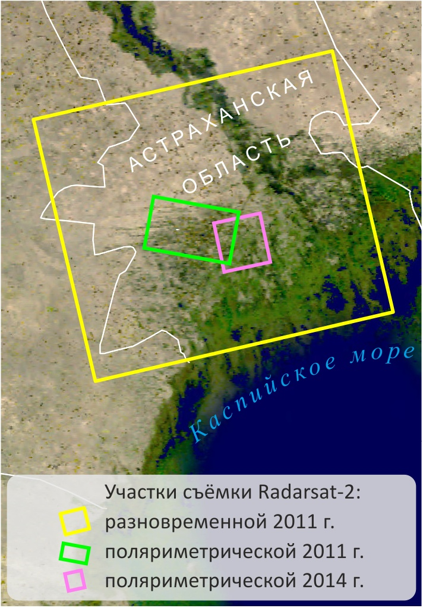
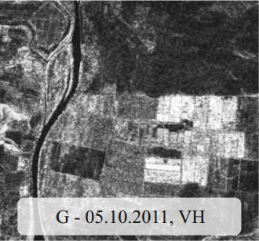
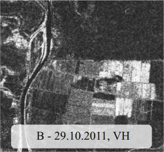
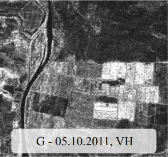
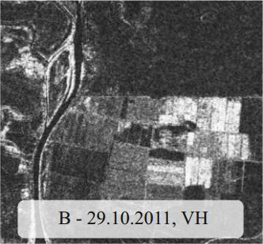
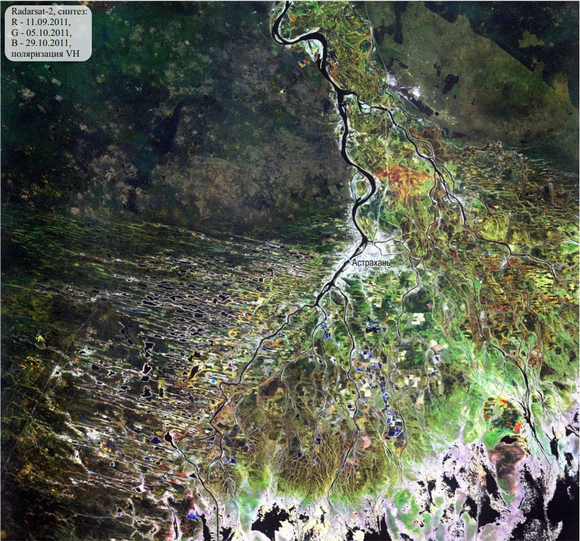
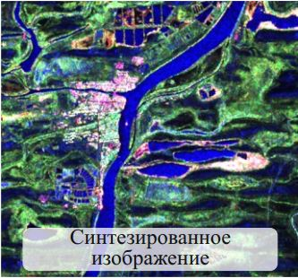
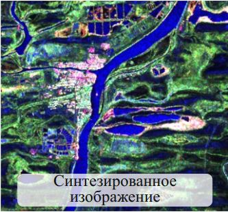

Радиолокационные данные в географических исследованиях и картографировании |
|||||||||||||||||
|
|

Дельта Волги - уникальный природный регион, на территории которого пересекаются различные виды
деятельности
человека: сельскохозяйственная, газодобывающая, рекреационная, природоохранная.
Для определения состояния необрабатываемых сельскохозяйственных угодий использовались различные наборы данных Radarsat-2: 1) три разновременных амплитудных снимка, полученных 11 сентября, 5 и 29 октября 2011 г. в съёмочном режиме Wide Fine в двух поляризациях - согласованной VV и перекрёстной VH; 2) комплексные полнополяриметрические (HH, HV, VH и VV) данные, полученные 11 сентября 2011 г. в режиме Wide Fine Quad-Pol и 22 июля 2014 г. в режиме Fine Quad-Pol. Предварительная обработка разновременных снимков 2011 года включала следующие этапы: автоматическую корегистрацию, фильтрацию спекл-шума, в том числе многовременную, и геокодирование. Создано два многовременных синтезированных изображения (в поляризации VV и VH), красный, зелёный и синий цвета которых присвоены снимкам от 11.09.2011, 05.10.2011 и 29.10.2011 соответственно. Вклад яркости каждого из снимков позволяет судить о свойствах и изменениях объектов местности.      
Создание многовременного синтезированного изображения Стабильные объекты, не изменившиеся за период между съёмками, на многовременном синтезированном снимке изображаются оттенками серого. Из них самые яркие - населённые пункты и густая высокая растительность (галерейные, преимущественно ивовые, леса вдоль рек, заросли тростника по берегам озёр-ильменей и по морскому краю дельты Волги), а самые тёмные - объекты гидрографии (при поляризации HV, при VV - только водная гладь без волнения и ряби), участки с очень редкой полупустынной растительностью на буграх Бэра и обвалованных полях. Изменившиеся за период между съёмками объекты (например, пахотные земли, находящиеся на разных стадиях обработки) изображаются разными цветами в зависимости от интенсивности обратного сигнала в тот или иной срок. 
Заросли тростника по оросительным каналам между полями дают высокий обратный сигнал и на синтезированном снимке изображаются в виде ярких полос на тёмном фоне, создаваемом сухими почвами (2). Зарастание залежей кустарниковой растительностью приводит к увеличению интенсивности обратного сигнала и, как следствие, к повышению яркости на снимке. Так как зарастание имеет не сплошной характер, на синтезированном снимке эти участки изображаются как более светлые пятна на тёмном фоне (3). Обрабатываемые участки (4) изображаются разными цветами. В целом, они дают более высокий обратный сигнал и поэтому имеют более высокую яркость на снимке из-за наличия растительности и повышенной шероховатости почвы. Низкую яркость имеют только рыбоводные пруды, которые были заполнены водой во время трёх съёмок (гладкая поверхность воды способствует зеркальному отражению радиоволн, что приводит к низким значениям обратного сигнала). На изображении в поляризации VV залежи в разном состоянии дифференцируются хуже, чем на изображении в поляризации VH, т.к. в первом случае достаточно высокий обратный сигнал и яркость свойственны и открытым почвам, и участкам, занятым кустарниковой растительностью.
Основной используемый способ обработки комплексных поляриметрических радиолокационных данных - метод поляриметрической декомпозиции. На примере данных Radarsat-2 2011 г. рассмотрим возможности визуального, а на примере данных 2014 г. - автоматизированного дешифрирования получаемых в результате декомпозиции результатов. Для данных 2011 года выполнены следующие этапы обработки: поляриметрическая декомпозиция Паули, некогерентное накопление и геокодирование. В результате декомпозиции Паули на основе исходного снимка создаются три новых изображения, характеризующие вклад основных механизмов рассеяния радиоволн от поверхности: однократного, двукратного и объёмного. На первом изображении наибольшую яркость имеют объекты, характеризующиеся однократным рассеянием: залежи без растительности, вершины и склоны бугров Бэра с высохшей полупустынной растительностью, объекты гидрографии. На втором изображении максимальную яркость имеют вертикально ориентированные объекты, дающие двукратное рассеяние: здания, стволы деревьев и др. На третьем изображении наибольшей яркостью характеризуется растительный покров (ивовые леса, кустарники, рогозово-тростниковые заросли, луговая растительность), которому свойственно объёмное рассеяние. Составлено синтезированное изображение, на котором красный цвет присвоен изображению, характеризующему вклад двукратного рассеяния, зелёный - объёмного, а синий - однократного.     
Создание цветного синтезированного изображения из компонент, полученных в результате поляриметрической декомпозиции Паули На нём цветом выделяются группы объектов, сходных по преобладающему механизму рассеяния. Синим цветом изображаются ровные поверхности, дающие однократное отражение радиоволн (объекты гидрографии и участки, практически лишённые растительного покрова). Жёлто-розовым изображаются участки, на которых сочетаются объекты, дающие двукратное и объёмное рассеяние (населённые пункты, ивовые леса вдоль рек и тростниковые заросли по берегам ильменей). Оттенками зелёного цвета изображаются объекты с выраженным объёмным рассеянием сигнала (участки с разным проективным покрытием растительности). Для участков 1 и 2, выделенных прямоугольными рамками, составлены схемы дешифрирования.
Для данных 2014 года выполнены следующие этапы обработки: радиометрическая калибровка с сохранением данных в комплексном виде, фильтрация спекл-шума, поляриметрическая декомпозиция (опробованы разные алгоритмы) и геокодирование. На последнем этапе выполнен пересчёт значений коэффициента обратного рассеяния в децибелы. Для автоматизированного дешифрирования состояния залежей использовалась компонента объёмного рассеяния, получаемая в результате поляриметрических декомпозиций, поскольку она наиболее чувствительна к характеристикам растительного покрова. Проведена серия экспериментов, в ходе которых выявлено, что наиболее достоверный результат даёт классификация компонент объёмного рассеяния, полученных в результате поляриметрических декомпозиций Pauli и Freeman-Durden, по методу минимального расстояния с выделением трёх классов. Достоверность классификации оценивалась с опорой на данные наземных обследований и снимки в оптическом диапазоне сверхвысокого пространственного разрешения. Результат классификации залежей (1 - практически открытая почва с высохшими эфемерами, 2 – вегетирующая травянистая растительность, 3 – древесно-кустарниковая растительность) На основе результа обработки радиолокационных данных Radarsat-2 2014 г., топографических карт 1980-х гг. и серии снимков в оптическом диапазоне Landsat, охватывающих период с 1984 г. по 2014 г., создана карта участка дельты Волги, характеризующая как длительность периода неиспользования залежей, так и их современное состояние (методика картографирования длительности периода неиспользования сельскохозяйственных угодий описана в разделе "Дистанционные методы исследования" Электронного атласа Каспийского моря). Фрагмент карты многолетних изменений и современного состояния сельскохозяйственных угодий в дельте Волги |
||||||||||||||||
|
© 2017 г. Балдина Е.А., Трошко К.А., лаборатория аэрокосмических методов, Географический факультет МГУ
имени М.В. Ломоносова
|
|||||||||||||||||